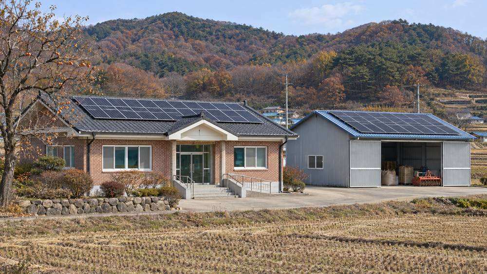

제천 사람과도시사회적협동조합·건주, '햇빛소득마을' 추진 업무협약…구체 사업은 미정

협약은 협력 기본 방향만 정해 / 마을 선정·시공권·수익 확정과는 별개
충북 제천의 사람과도시사회적협동조합(임창순 이사장)과 주식회사 건주(안병만 대표)가 11월 16일 주민참여형 재생에너지 사업 '햇빛소득마을' 추진을 위한 업무협약을 맺었다. 주민이 사업 과정에 직접 참여하고 발전 이익이 지역에 돌아오는 구조를 만든다는 것이 목표이며, 두 곳은 역할을 나눴다. 건주는 현장 조사, 설치용량·발전량 검토, 설계·견적, 계통연계·인허가와 기술·안전·시공·유지관리를 지원하고, 협동조합은 주민 의견수렴·교육, 협동조합 설립·운영, 공모 신청, 행정협의, 주민 이익 공유와 공동체 환원 방안 마련을 맡는다. 협력 범위에는 대상 마을·부지 발굴, 주민설명회와 참여조직 구성, 태양광과 에너지저장장치(ESS) 설계·시공·유지관리, 사업성과 관리도 들어갔다. 출자·부지 제공·시공업체 선정·발전 수익 활용은 마을 주민조직의 적법한 의사결정을 존중하고, 사업비·수익배분·운영 책임은 주민조직이 정해 별도 계약으로 진행한다. 다만 이번 협약은 협력의 기본 방향만 정한 것이어서 구체적인 사업 선정, 시공권, 수익은 아직 정해지지 않았다.
시민에너지 관점
협약이 맺어졌다고 마을 수익이 정해진 것은 아니어서, 주민 이익이 실제로 지역에 남으려면 출자 비율과 배당 순서가 별도 계약에 먼저 적혀야 한다. 독일의 시민에너지협동조합은 주민이 조합원으로 직접 출자하고 의결권을 나눠 가지는 방식으로 이익이 마을 밖으로 새지 않게 해 왔다. 이번 협약도 사업비·수익배분·운영 책임을 주민조직이 정한다고 했으니, 기술과 시공을 맡는 기업과 주민이 대등하게 마주 앉을 수 있도록 지역 소유가 계약의 중심에 서야 한다. 두 곳은 마을을 고르기 전에 주민설명회를 열고 계약 초안과 수익 구조를 주민에게 먼저 공개해야 한다.
출처: 충북일보 2026-11-17 이형수 원문 보기